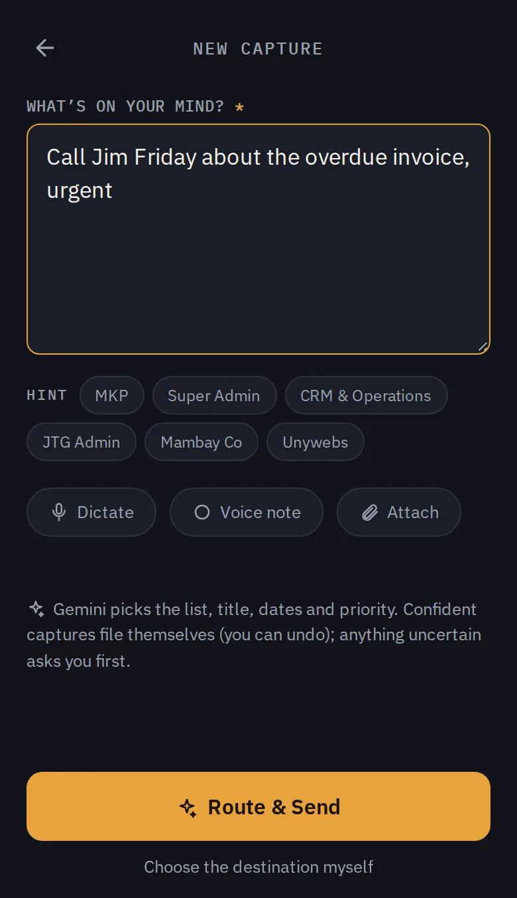
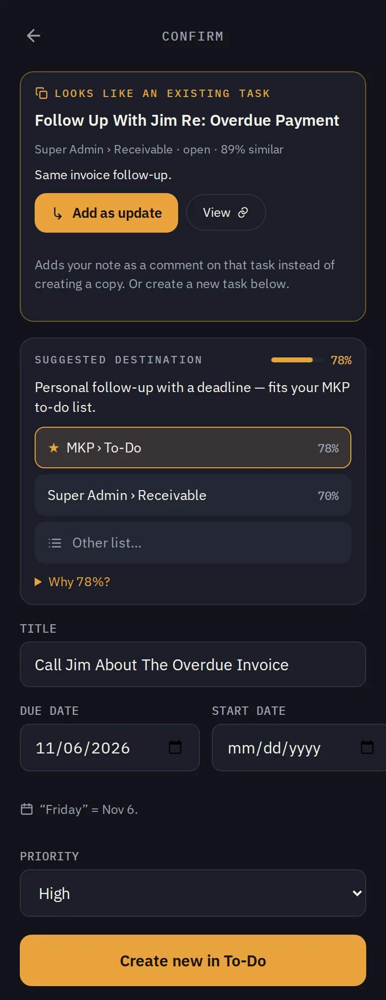
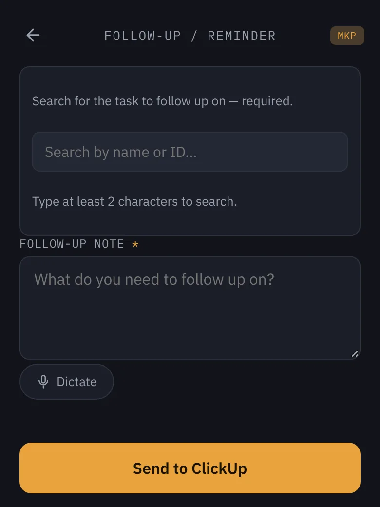
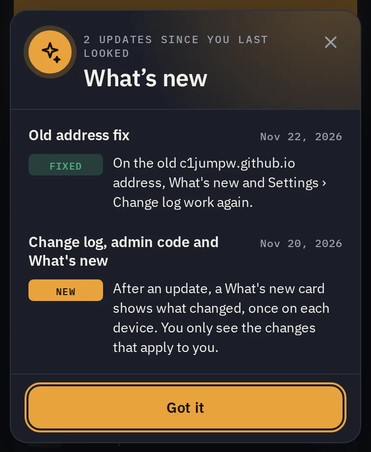
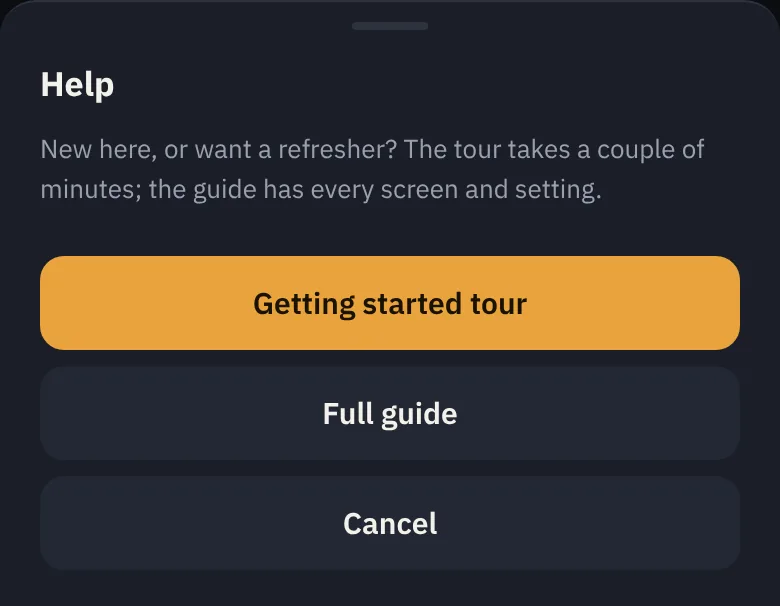
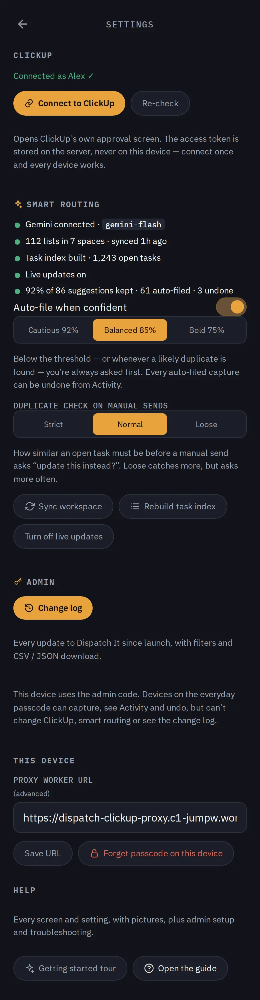
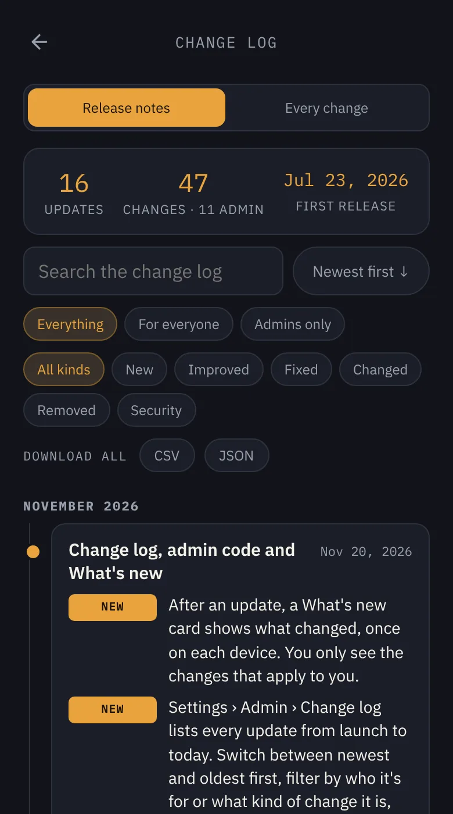

The first time you open Dispatch It on a phone or computer, enter the passcode. The device remembers it.
Passcode: ask your admin for it.
Unlock.
1234
Everyday use
Home
One big button for new captures, and the last things you sent from this device.
New Capture: smart routing picks the list.
Or choose the destination yourself.
Recent: tap the link icon to open one in ClickUp.
Activity: everything sent from every device, with Undo.

1234
Everyday use
Say it once
Write it the way you'd say it. Smart routing picks the list, tidies the title, reads dates like “Friday” and priority like “urgent”, and checks for duplicates.
What's on your mind?
Hint: optionally pick the business.
Dictate, record a voice note, or attach files.
Route & Send.

1234
Everyday use
When it asks first
If smart routing isn't sure, or finds a task that looks the same, you decide on the Confirm screen.
It found a matching task.
Add as update: comment on that task instead of making a copy.
★ The top pick, with other likely lists below.
Send, or Create new in the chosen list.
12
Everyday use
Filed on its own
When smart routing is sure and finds no duplicate, the capture files itself and you land back on Home.
Where it went, and how sure it was.
Undo stays for 8 seconds; after that, use Activity.
123
Everyday use
Pick the list yourself
From Home, tap “Choose the destination yourself”, pick a business, then a capture type.
Each capture type goes to a specific ClickUp list.
Follow-up / Reminder comments on an existing task.
More lists in this space: other ClickUp lists, added automatically.
1234
Everyday use
Fill in the form
Only the title is required. A check mark confirms it reached ClickUp.
Title.
Make this a subtask of another task.
Assignee: anyone on that list.
Send to ClickUp.

12
Everyday use
Follow-ups
A follow-up doesn't create a task: it adds your note as a comment on one that already exists.
Search for the task, then tap it.
Write the follow-up note.
123
Everyday use
Activity and Undo
Every send from every device. Undo deletes a task it created or removes a comment it added.
How often suggestions were kept.
Undo takes two taps: Undo, then Confirm?
Open it in ClickUp.

123
Everyday use
What's new
After an update, this card shows what changed since this device last looked, once. You only see the changes that apply to you.
How many updates you missed.
What kind of change each line is.
Got it: it won't show again on this device.

12
Everyday use
Help is one tap away
Tap the ? on Home any time.
Replay this tour.
Open the full guide: every screen and setting.
Everyday use · done
You're set.
That's everything for day-to-day capturing. Tap the ? on Home to replay this tour or open the full guide.
Admin codeAlso ClickUp, Smart routing and the change log
→
Not set yet?Until ADMIN_PASSCODE is on the Worker, the everyday passcode has full access
Turn a device into an admin device in Settings › Admin code. Changes to auto-filing and duplicate checks still apply to every device.

123
Admin
Connect ClickUp
Connect once; the connection is stored on the server, so every device works.
Connect to ClickUp opens ClickUp's approval screen.
Re-check confirms it.
Status lines name any problem.
123
Admin
Auto-filing
A capture files itself only when it scores at or above the threshold and no likely duplicate is found. Otherwise people see the Confirm screen.
Auto-file when confident: on or off.
Cautious 92%, Balanced 85% (default), Bold 75%.
How strict the duplicate check is on manual sends.
123
Admin
Keep ClickUp in sync
With live updates on, new ClickUp lists and task changes arrive within seconds; a sync also runs every 15 minutes.
Sync workspace reads every space and list now.
Build task index turns on duplicate detection.
Live updates on or off.
1
Admin
Destinations
New ClickUp lists show up on their own. To add or rename a capture type, edit mkp-dispatch/js/config.js and publish the change.
Lists found by syncing ClickUp appear here.
12
Admin
Passcode and secrets
Set the admin code with “npx wrangler secret put ADMIN_PASSCODE”; change the everyday one with “… APP_PASSCODE”. Never paste secrets in chat or email.
Forget passcode on this device.
Replay this tour from Settings › Help.

1234
Admin
The change log
Settings › Change log has every update since launch. Every change lists each code change automatically, so nothing is missed.
Release notes or Every change.
Newest or oldest first.
Everything, for everyone, or admin-only.
Download the whole history as CSV or JSON.
Admin
This guide keeps itself current
Push an updateAny change to the app
→
Screenshots retakenAn automatic GitHub job rebuilds the guide and this tour
→
Change logAdd a release to mkp-dispatch/CHANGELOG.md. [Admins] lines reach admin devices only
Each device sees new releases once, as What's new. If a button the guide points at is renamed or removed, the job stops and GitHub emails you, so the guide never quietly goes out of date.
Admin · done
You're set.
Those are the admin jobs. The full guide's Admin section has setup steps, the secrets table and troubleshooting.